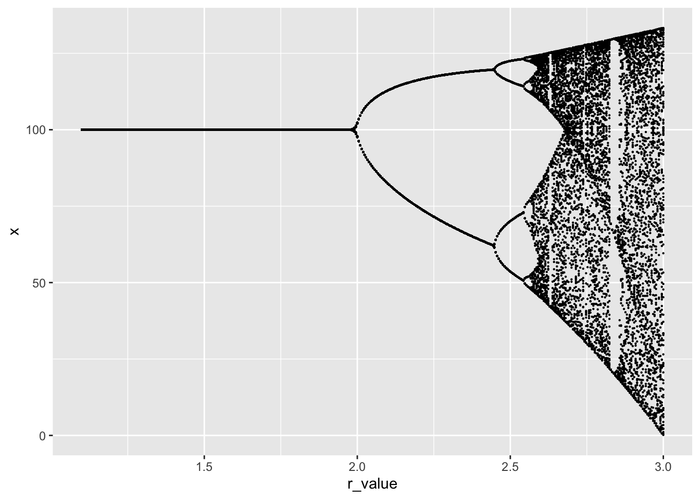

popdyn livecode examples
library(tidyverse)We want to simulate a basic population dynamics process.
\[X_{t+1} = X_t + r X_t \left(1 - \frac{X_t}{K} \right) = f(X_t)\]
logistic <- function(x, r = 1, K = 100){
x + r * x * (1 - x / K)
}We wrap our simulation up in a function, so we can pass different r values. We pass the population function as an argument.
simulate <- function(r, f = logistic){
Tmax <- 300
x0 <- 10
df <- tibble(x = x0, t = 0)
for(t in 1:Tmax){
x_t <- df[t,"x"][[1]]
x_t1 <- f(x_t, r)
df <- bind_rows(df,
tibble(x = x_t1, t = t))
}
## Let's discard the early points in the time series so we get the long-term behavior.
df %>% filter(t > 200)
}
simulate(2.7) %>% ggplot(aes(t, x)) + geom_line()
Now let’s use another for loop to iterate over a whole bunch of r values, creating a “Bifurcation Diagram”:
r_values <- seq(1.1, 3, length.out = 400)
sim_results <- tibble(x = 100, t = 0, r_value = 1.1)
for (r in r_values){
tmp <- simulate(r)
tmp$r_value <- r
sim_results <- bind_rows(sim_results,
tmp
)
}
sim_results %>% ggplot(aes(r_value, x)) + geom_point(size=.1)
Compare this to experimental manipulations of laboratory populations of flour beetles which demonstrating chaotic dynamics:

From: Costantino, R. F., Desharnais, R. A., Cushing, J. M., & Dennis, B. (1997). Chaotic Dynamics in an Insect Population. Science, 275(5298), 389–391. https://doi.org/10.1126/science.275.5298.389